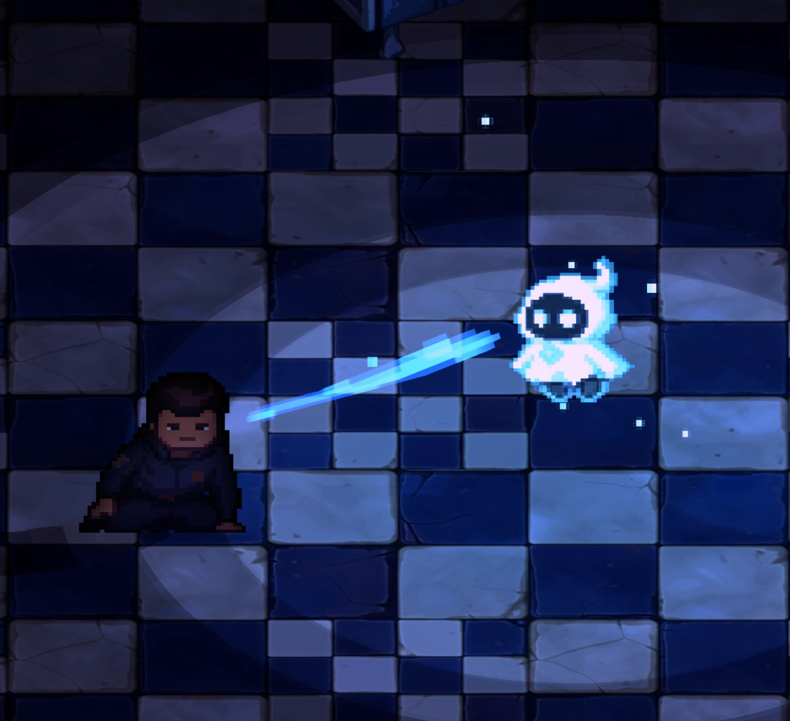

Overview: Gemini is a stylized Unity game project that combines 2D pixel-art visuals, 3D low-poly assets, custom shader/VFX work, animation implementation, and gameplay systems into a cohesive interactive experience. The project was developed by a four-person team from January to April 2026, with a focus on building a visually expressive world while supporting readable player interactions, narrative progression, and moment-to-moment gameplay feedback.
My role on the project was Technical Artist & Gameplay Developer. I worked across the visual and technical pipeline, including shader development, VFX implementation, ProPixelizer rendering setup, AI-assisted asset exploration, pixel animation refinement, animation implementation, gameplay scripting, interaction prompts, camera behavior, cutscene logic, and progression systems.
This project represents the kind of game work I want to do: building visual systems that are not only aesthetic, but also functional in-engine. Instead of relying only on traditional hand-painted production, I explored a pipeline where AI-assisted tools, pixel-art editing, 3D conversion, shaders, and Unity implementation worked together to create a stylized game experience with limited production resources.
Gemini uses a hybrid visual style where 2D pixel-art characters and effects exist inside a 3D low-poly Unity environment. The game's look was shaped through a combination of AI-assisted visual exploration, manual pixel refinement, shader/VFX work, animation implementation, and ProPixelizer rendering. The result is a game that feels handcrafted and stylized while still being built through a practical technical art pipeline.
The preview highlights player movement, the tether mechanic, enemy detection and chase feedback, pixelated interaction prompts, memory collection, shader/VFX moments, and the final in-game environment look.
Technical Artist & Gameplay Developer
January 2026 – April 2026
The main challenge of Gemini was creating a visually cohesive game with a small team, limited production time, and a style that required both 2D and 3D assets to feel like they belonged in the same world. We wanted the game to have a pixel-art identity, but we also wanted the flexibility of a 3D Unity environment for camera movement, level composition, lighting, and gameplay implementation.
This created a technical art problem: how do we build a game that feels visually intentional without needing to hand-paint every asset from scratch? The solution was to build a production pipeline that combined AI-assisted visual exploration, manual refinement, 3D asset generation, shader development, animation implementation, and in-engine rendering tools.
My focus was to bridge the gap between visual direction and implementation. I needed to make sure the assets, shaders, effects, prompts, animations, and gameplay systems worked together inside Unity, instead of existing as separate art or code pieces.
The visual direction of Gemini was built around a hybrid 2D/3D approach. Characters, animations, prompts, and effects leaned into a pixel-art language, while the environment used low-poly 3D assets rendered through a pixelated screen-space style. This allowed the game to keep a retro, stylized look while still benefiting from 3D scene composition and Unity gameplay systems.
My technical art goal was to create a pipeline where visual assets could move from exploration to implementation quickly. I used AI tools to generate and explore visual possibilities, then refined the results manually through Aseprite, shader work, Unity setup, animation implementation, and ProPixelizer integration. The goal was not to replace art direction, but to make the visual production process faster, more flexible, and more achievable for a small team.
This process helped me create visuals without relying only on traditional painting. I treated AI output as a starting point, then used technical judgment to clean, adapt, animate, stylize, and integrate assets into the final game.
Key technical art goals:
My responsibilities:

One of my biggest contributions to Gemini was developing a visual pipeline that allowed us to create stylized assets without depending entirely on traditional hand-painted production. I explored AI-assisted tools such as PixelLab for 2D pixel-art and animation directions, and Meshy for generating 3D assets from 2D image references. These tools helped speed up early exploration, but the final quality still depended on manual selection, cleanup, refinement, and Unity implementation.
After generating or exploring visual options, I refined the assets manually in Aseprite. This included cleaning pixel frames, adjusting silhouettes, improving animation readability, and making sure the assets matched the game's visual direction. For 3D assets, I evaluated whether the generated forms could work inside the low-poly environment, then brought them into Unity and adjusted scale, material setup, and visual consistency.
The strength of this pipeline was that it gave the team a practical way to create a larger visual world with limited time. Instead of treating AI tools as a final-output solution, I used them as part of a technical art workflow: generate, select, refine, test in-engine, adjust, and integrate.
To make the 2D and 3D elements feel visually connected, I worked on shader and VFX systems that supported the game's stylized direction. ProPixelizer played an important role in giving the 3D world a pixelated screen-space look, helping the low-poly environment sit closer to the pixel-art characters and effects.
I also created and adjusted custom shader effects for gameplay and readability. These included visual treatments for occlusion, see-through moments, tether feedback, interaction moments, and other in-game effects. The goal was not only to make the game look more polished, but to make important gameplay states easier for players to understand.
This was where my technical artist role became most important. I had to think about visual style, player feedback, engine constraints, and implementation at the same time. A shader or effect could not just look interesting in isolation. It had to work during gameplay, support the camera angle, fit the pixelated visual language, and communicate useful information to the player.
The tether mechanic was one of the key gameplay systems I worked on. It needed to function as a mechanic, but it also needed clear visual feedback so players could understand distance, connection, and state changes during gameplay.
I implemented the tether behavior in Unity and connected it with visual feedback so the mechanic felt readable instead of purely mechanical. This included thinking about how the tether should appear on screen, how it should respond to player movement, and how it should communicate the relationship between characters or gameplay objects.
This system reflects my strength as both a technical artist and gameplay developer. I was not only writing logic, and I was not only making visuals. I was connecting gameplay behavior with visual communication so the player could understand the mechanic through what they saw and felt in the game.
I also worked on enemy detection and chase feedback. This system needed to make enemy behavior clear to the player without breaking the atmosphere of the game. If the feedback was too subtle, players might not understand when they were being detected. If it was too obvious, it could weaken the mood and tension.
My goal was to create feedback that supported both gameplay readability and emotional pacing. I worked on the logic and presentation of enemy states so the player could recognize danger, react to pursuit, and understand when the situation had changed.
This part of the project helped me practice designing feedback systems from both a developer and player-experience perspective. The enemy system was not only about whether the code worked. It was about whether the player could read the state of the game quickly enough to make decisions.
Gemini also required interaction, animation, and narrative systems that helped players understand what they could do and how their progress affected the story. I worked on pixelated interaction prompts, animation implementation, narrative UI moments, memory fragment progression, and cutscene logic for the intro and ending sequences.
The interaction prompts needed to feel like part of the game world rather than generic UI elements. I designed and implemented prompts such as "Press E" interactions with a pixelated visual treatment so they matched the rest of the game's style. These prompts helped guide the player while keeping the screen language consistent with the visual direction.
For the narrative and progression systems, I helped implement memory fragment logic and true ending conditions. This connected player actions to story outcomes, giving the game a stronger sense of progression and consequence. I also supported intro and ending cutscene logic, helping the project feel more complete as a playable experience rather than only a prototype.
Because Gemini used a 3D environment with a stylized pixel-art presentation, camera behavior and scene readability were important technical challenges. The camera needed to support exploration, atmosphere, and composition while still allowing players to understand where they were and what they could interact with.
I worked on camera-related behavior and scene readability solutions, including camera angle handling and visual support for occlusion. These systems helped reduce moments where important gameplay information could be hidden by the environment.
This was another example of how technical art and gameplay development overlapped in the project. A camera problem is not only a code problem or a visual problem. It affects navigation, readability, atmosphere, and player confidence. My work focused on making the camera and visual systems support the game experience instead of fighting against it.
One of the biggest challenges was maintaining visual consistency across different types of assets. Gemini used 2D pixel-art characters, generated or refined animation frames, 3D low-poly assets, shader effects, and screen-space pixel rendering. Each part could easily feel like it belonged to a different visual style if it was not carefully adjusted.
To solve this, I treated the project as a pipeline problem. I constantly compared assets in-engine, adjusted them based on the final Unity view, and used ProPixelizer and shader treatments to bring the visuals closer together. This taught me that technical art is not just about making individual assets. It is about building rules, workflows, and implementation methods that help the whole game feel consistent.
Another challenge was working with AI-assisted assets. AI tools were useful for speed and exploration, but the output was not automatically game-ready. Some assets needed cleanup, some needed stronger silhouettes, and some did not match the game's style once they were tested in Unity. I had to decide what was usable, what needed manual refinement, and what should be discarded.
This process helped me understand that the value of AI in game production is not simply generation. The real value comes from art direction, technical judgment, cleanup, integration, and iteration. As a technical artist, I had to turn rough visual possibilities into something that worked inside a real game.
Gemini helped me understand the role of a technical artist more clearly. I learned that technical art is not only about shaders or tools. It is about connecting visual goals with production realities, gameplay needs, and engine constraints.
I also learned how powerful a hybrid pipeline can be for small teams. By combining AI-assisted exploration, manual pixel cleanup, 3D asset generation, shaders, and Unity implementation, I was able to help create a stronger visual result than we could have achieved through one method alone.
From the gameplay side, I learned how important visual feedback is for player understanding. Systems like the tether mechanic, enemy detection, interaction prompts, animation implementation, and memory progression all needed clear communication. A feature is not complete just because the logic works. It needs to be readable, responsive, and understandable in the moment of play.
Most importantly, this project showed me that my strength is working between art and engineering. I enjoy building systems that make a game look better, feel clearer, and function more smoothly in-engine.
Gemini is one of the clearest examples of the kind of game work I want to continue doing. It allowed me to combine technical art, gameplay development, shader/VFX work, animation implementation, and visual pipeline design into one project.
What I am most proud of is not only the final look of the game, but the process behind it. I helped create a workflow where a small team could produce stylized visual content through AI-assisted exploration, manual refinement, 3D asset generation, and Unity implementation. This allowed us to build a more complete and expressive game without relying only on traditional asset production methods.
This project strengthened my confidence as a Technical Artist & Gameplay Developer. I was able to create visuals, implement mechanics, support player feedback, and connect art direction with real-time engine systems. Gemini reflects my ability to solve visual and technical problems together, which is the core strength I want to bring into game development and technical art roles.